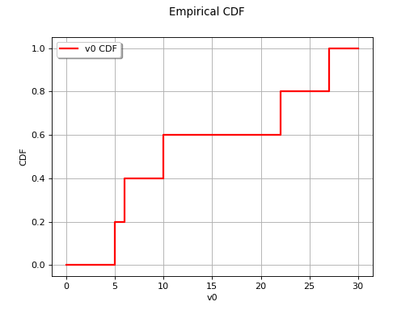

Empirical cumulative distribution function¶
The empirical cumulative distribution function provides a graphical representation of the probability distribution of a random vector without implying any prior assumption concerning the form of this distribution. It concerns a non-parametric approach which enables the description of complex behavior not necessarily detected with parametric approaches.
Therefore, using general notation, this means that we are looking for an
estimator  for the cumulative distribution function
for the cumulative distribution function
 of the random variable
of the random variable
 :
:

Let us first consider the uni-dimensional case, and let us denote
 . The empirical probability distribution is
the distribution created from a sample of observed values
. The empirical probability distribution is
the distribution created from a sample of observed values
 . It corresponds to a
discrete uniform distribution on
: where
. It corresponds to a
discrete uniform distribution on
: where  follows
this distribution,
follows
this distribution,
![\begin{aligned}
\forall \; i \in \left\{1,\ldots, N\right\} ,\ \textrm{Pr}\left(X'=x_i\right) = \frac{1}{N}
\end{aligned}]()
The empirical cumulative distribution function
with this distribution is constructed as follows:
![\begin{aligned}
F_N(x) = \frac{1}{N} \sum_{i=1}^N \mathbf{1}_{ \left\{ x_i \leq x \right\} }
\end{aligned}]()
The empirical cumulative distribution function  is defined
as the proportion of observations that are less than (or equal to)
is defined
as the proportion of observations that are less than (or equal to)
 and is thus an approximation of the cumulative distribution
function
and is thus an approximation of the cumulative distribution
function  which is the probability that an observation is
less than (or equal to) .
which is the probability that an observation is
less than (or equal to) .
![\begin{aligned}
F_X(x) = \textrm{Pr} \left( X \leq x \right)
\end{aligned}]()
The diagram below provides an illustration of an ordered sample
 .
.
(Source code, png)
{kind=link}

The method is similar for the case  . The empirical
probability distribution is a distribution created from a sample
. The empirical
probability distribution is a distribution created from a sample
 . It
corresponds to a discrete uniform distribution on
: where
. It
corresponds to a discrete uniform distribution on
: where
 follows this distribution,
follows this distribution,
![\begin{aligned}
\forall \; i \in \left\{1,\ldots, N\right\} ,\ \textrm{Pr}\left(\vect{X}'=\vect{x}_i\right) = \frac{1}{N}
\end{aligned}]()
Thus we have:
![\begin{aligned}
F_N(\vect{x}) = \frac{1}{N} \sum_{i=1}^N \mathbf{1}_{ \left\{ x^1_i \leq x^1,\ldots,x^{n_X}_N \leq x^{n_X} \right\} }
\end{aligned}]()
in comparison with the theoretical probability density function :
![\begin{aligned}
F_X(x) = \Prob{X^1 \leq x^1,\ldots,X^{n_X} \leq x^{n_X}}
\end{aligned}]()
This method is also referred to in the literature as the empirical distribution function.